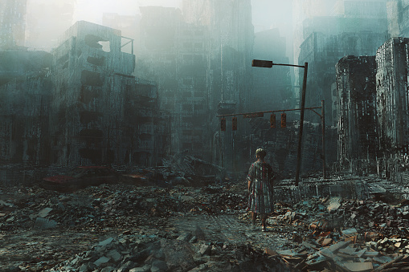

454
"All wars are thinking of mans failure as a animal"
War is a terrible evil. It refers to an armed battle between nations. War causes big sufferings to the family members of the people who die during the war. During wars, there is massive destruction of property, wealth, trade, industry, etc. It completely upsets the social life of people. Many people argue that war is a necessary evil, and the only process of solving international disputes. But, in reality, war happens, only because people are not ready to settle disputes in a peaceful manner. Peace means complete freedom from disturbance. It refers to those times when there is no war or fight among nations. Once the world starts believing that wars are unnecessary and decide to abolish war completely, they will certainly find a way for peaceful co-existence. Human being’s love for peace is universal. Human being is by nature peaceful. War does not furnish a proof of the idea that human is a fighting animal. Even the acts of war did not spoil in the least human’s spontaneous love for peace.